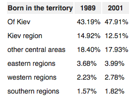
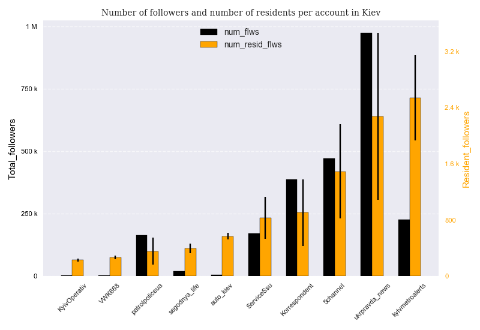
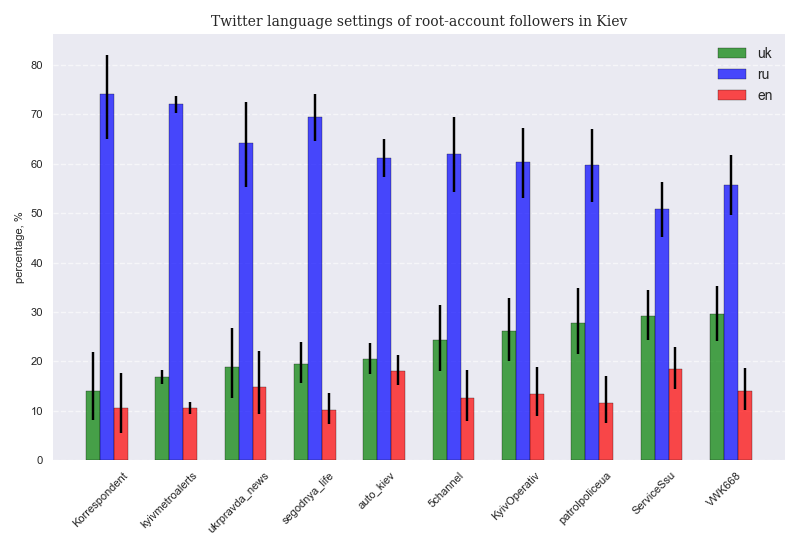
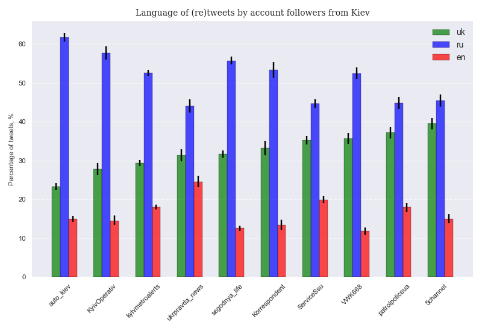
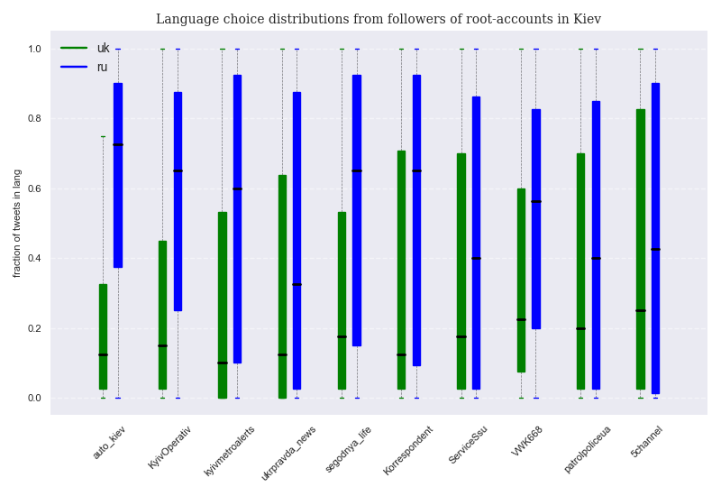
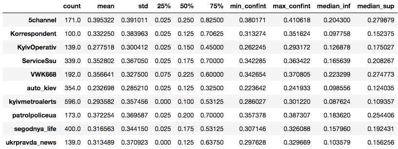
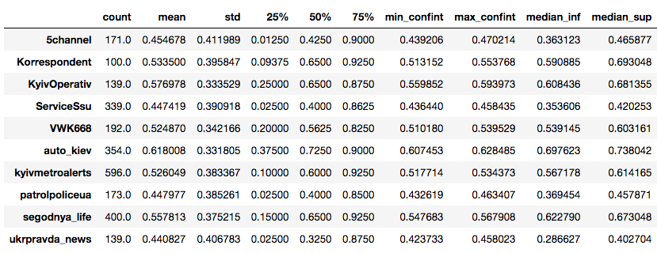

Introduction¶
In this post we will explore the linguistic behavior of Kiev residents that are also active on Twitter. In a previous post, we carried out an identical task for the city of Barcelona. Even though at first sight Barcelona and Kiev do not seem to have many points in common, in reality they are both large bilingual cities where a language that developed locally coexists with a much more powerful one that has also been spoken for centuries in the city. They also share a history of minoritization of the vernacular language that, strikingly, spans a very similar period of time: roughly the 300 years from the beginning of the 18th century to the end of the 20th century, when Ukraine became an independent country and Catalonia regained some degree of autonomy from Spanish rule.
Both languages have undergone brief periods of cultural revival followed by new waves of repression. Russian was already the dominant language of the city of Kiev in the 19th century according to the General Census of the Russian Empire of 1897, long before the beginning of Soviet rule and before the exodus from the countryside that made Ukrainian a relevant language in Kiev again as a late industrial revolution unravelled in the Russian Empire. This is exactly the same phenomena that took place in Barcelona more than half a century earlier: a predominantly Spanish-speaking city swelled in size as workers poured into it from all rural areas in Catalonia, making Catalan again the most spoken language in the capital. New periods of political repression -and especially in Catalonia, together with massive immigration of Spanish speakers- reestablished the dominance of Russian and Spanish.
A recent visit to Kiev also confirmed very similar dynamics to those of Barcelona in terms of diglossia: the spontaneous use of Russian with strangers (the security guard in a central city mall stopping a suspicious person carrying a bucket), the preference for Russian among staff of a central Hotel, the overwhelming preference for it by passengers and staff alike at Boryspil airport ( also among young flight assistants when talking to each other)... all in a background of boards and signs primarily - and in Kiev almost exclusively - written in the vernacular language, which can be heard rather frequently in the streets.
However, there are also some differences that need to be pointed out: Kiev has enjoyed some periods of political autonomy from Russian rule that have no real counterpart in the Catalan case, such as Ukrainization in the 1920s. In addition, though Soviet rule was in many ways an even more brutal regime than the Francoist dictatorship, the Ukrainian language was not banned from the educational system during most periods of the 20th century (when education became almost universal). Last but not least, Ukraine became an independent country in 1991 and since then has enjoyed complete control on language policies as well as on their enforcement: whereas a new wave of Ukrainization is currently in full swing, the Catalan government is being constantly challenged by the Spanish legal system in all sensitive matters that have to do with language and it has comparatively much less room for maneuver.
The post will follow the same structure as the previous one about Barcelona, together with a comparison of results to highlight potential differences and similarities between both cities
Discussion of Twitter sample bias¶
In the previous post it was shown that Twitter samples tend to overrepresent younger-than-average people with higher-than-average incomes and educational backgrounds. Let us discuss how this fact may introduce bias into our analysis of language choice in Kiev:
- Education and income bias: The sociolinguistic association of Ukrainian in Kiev does not seem to be as clear as that of Catalan in Barcelona: whereas Catalan tends to be relatively more spoken in middle-to-higher-class areas (with the exception of the very rich classes, that prefer Spanish), Ukrainian follows a different pattern (see Chapter 5, page 1049 of the PhD thesis by Olga Ivanova). In Kiev, Russian is dominant among middle-to-higher classes, but the use of both Ukrainian and Russian is much more balanced among people of lower-class incomes. This difference is due to many factors, but migration dynamics play an important role in it: even though both cities have a very large percentage of inhabitants born in another region or place (almost 50%), in recent decades Kiev has attracted hundreds of thousands of migrants from predominantly rural areas of Central Ukraine (18% of the population) where Ukrainian is often the most spoken language. Kiev also attracts many foreigners from ex-Soviet republics, including Russian federation, but they make up only 11% of the city residents (see data on Wikipedia ) On the contrary, Barcelona does attract migrants from Catalan-speaking aereas of Catalonia, but also many more monolingual Spanish speakers from poorer regions of Spain ( current proportion 3 to 1, but over 4 to 1 in recent past) and foreigners that usually come with already some knowledge of Spanish but no knowledge at all of Catalan (proportion 4 to 1) ( see data on Idescat). The conclusions is that, from an income and educational perspective, Russian speakers might be overrepresented in the samples we will obtain.

age_bias: The age factor works approximately in the same way as for Barcelona as far as the vernacular is concerned. Since Twitter samples tend to overrepresent the younger generations who have had a relatively much higher exposition to education in Ukrainian, Twitther samples will introduce a bias in favor of Ukrainian as compared to the habits of the entire population.
cultural_bias: Contrary to the case of Barcelona, where the very fact of being a Twitter user could not be correlated with language preference, it is possible that in Kiev, Ukrainian speakers are more likely to be Twitter users than Russian speakers. Since Twitter is a networking service that originated in the US, and since there are popular Russian-based alternatives in social media, it is possible that Western-oriented speakers are overrepresented in a Twitter sample. However, we do not believe this to be a significant bias in Kiev, where the fact of speaking Russian rather than Ukrainian is rarely associated to a political identification with Russia.
Selected root accounts¶
Identical criteria to those applied in the Barcelona post were used to select the list of 10 Twitter root accounts. The resulting sample has in principle a pro-Ukrainian bias that should compensate for any potential pro-Russian bias coming from primarily middle-class Twitter users. The idea is to avoid underestimation of the use of the Ukrainian language in the city.
The following are the selected root accounts:
5 accounts in Ukrainian only:
- @kyivmetroalerts : the official Twitter account of Kiev's public transport service
- @ukrpravda_news : a popular online newspaper based in Kiev
- @ServiceSsu : official Twitter account of the Ukrainian security services
- @patrolpoliceua : official Twitter account of the police of Ukraine
- @5channel : a popular information channel
2 in Russian :
- @segodnya_life : a widely distributed tabloid newspaper
- @Korrespondent : another popular online newspaper based in Kiev
3 bilingual accounts:
- @VWK668 : a private account with historical pics and news from the city of Kiev
- @KyivOperativ : an account that reports on accidents and crimes occurred in Kiev
- @auto_kiev : another account that provides traffic information from Kiev.
Of these accounts, we consider @kyivmetroalerts, @patrolpoliceua, @KyivOperativ, @auto_kiev and @VWK668 to be politically neutral. Let us remember that political neutrality does not imply cultural neutrality. tweepy was again used to predict the language in which tweets are written, in addition to the prediction provided by Twitter's algorithm ( See the appendix of the Barcelona post for technical details).
A significant difference between the Barcelona analysis and the Kiev one lies in the fact that Twitter is relatively much more popular in Barcelona than in Kiev. In Spain, Twitter is currently the 6th most popular website, whereas in Ukraine it is only the 28th. This results into a certain discordance between popular tabloids such as @segodnya (one of he most popular tabloids by distribution, approaching 1 million copies) having a relatively low number of Twitter followers ( ~ 20000 at the end of 2018) : the likely reason being that most of its readers are not frequent internet users yet. It also results in many account followers tweeting seldomly or not tweeting at all, thus making them unavailable for analysis.
Another important difference is the density of dummy or troll followers in the Ukrainian Twitter network, especially for those accounts with a huge number of followers such as @ukrpravda_news or @5channel. This pushed us to focus on accounts with a high density of Kiev residents rather than on accounts that were very popular on paper but that delivered a very low density of explicit Kiev residents after analysis.
Last but not least, the relatively low popularity of Twitter in Ukraine makes the presence of English even more inflated than in Barcelona. Many followers are actually expats.
Last but not least, we are aware that because of language contact some people in Kiev tend to speak a mixture of both Russian and Ukrainian, which is actually so widespread a phenomena throughout Ukraine that it even has a specific denomination : суржик or surzhyk, the name for a bread made out of mixed grains. The used algorithms are unfortunately not able to recognize surzhyk: they will assign their prediction to the language that has comparatively the higher proportion of inequivocal terms in each tweet.
Relative relevance of each account¶
Notice that for some accounts with over a million followers (such as @hola or @sport), it is more expensive to stream Barcelona residents, because their density is very low : these are accounts that are popular also outside Catalonia. As a consequence, their final samples will be smaller as compared to other accounts that have a much higher density of local followers such as @TMB_Barcelona or @bcn_ajuntament
Four out of the five most popular sites are written entirely in Catalan, whereas the three least popular accounts are all in Spanish. The printed version of @LaVanguardia currently has a much larger distribution than that of @DiariARA in Barcelona, but on Twitter the former has slightly less estimated resident followers than the latter. This seems to confirm that the Twitter sample is biased towards Catalan content when compared to the real population.

Twitter language settings per root accounts¶
Language settings could be an excellent indicator of language preference, but unfortunately they are not so because the default choice has too big an impact in the actual user choice. The pattern found in their distribution is very similar to that of Barcelona: a clear majority of users ( > 60% ) have their Twitter language settings in the international language (i.e. Russian). Ukrainian is picked by less than 30% of users even in the best-case scenario. This result is in line with many reports that state that Russian is still clearly dominant on the Internet in Ukraine: since the default setting depends on the language of the operating system installed in the computer or mobile phone, many users do not bother to modify automatic language settings if set to a language they understand perfectly. This explanation will be confirmed by the results in the following section.

Percentage of tweets in each language¶
Some users that have language settings in Russian tweet regularly also in Ukrainian. The percentage of tweets per account written in the latter language is consistently much higher than the percentage of users that have language settings in it.
Three among the most neutral accounts have followers which mostly prefer Russian, whereas the @patrolpolice or @5channel ( owned by current president Petro Poroshenko) have followers that are much more balanced in linguistical terms. In any case, at least 45% of tweets by followers of each account are in Russian, whereas at least 20% are in Ukrainian.

Distributions of followers' language choice per account¶
The box plots distribution are much more balanced than in the case of Barcelona accounts, immediately suggesting that Ukrainian is in a stronger position.

The data for box plots can be explored in more detail in the following dataframes:
- Ukrainian: 
- Russian: 
Comparison to official data¶
The relative use of Russian and Ukrainian in Kiev according to recent polls oscillates too much as to consider them sufficiently reliable. According to a recent poll conducted in 2015, 27% of households in Kiev speak Ukrainian while 32% prefer Russian: the rest claim to use both languages at home. Of course in most cases 'both' masks a difference in relative use that pollsters are unable or unwilling to quantify. According to another poll in 2006, Russian was the most used language in everyday life by 52% of Kievans, whereas 32% used both in equal measure and only 18% used mostly Ukrainian.
If we look at the distributions of percentage of users per majority language, the proportion of users that prefer Russian is twice as big as that of users that prefer Ukrainian. The obtained result is half way between the two mentioned polls.
This seems to indicate that indee
Comparison of language choice in public transport in Kiev and Barcelona¶
It would be interesting to attempt a comparison of the relative strength of the minority languages in both cities. In order to do this, we need samples that can indeed be comparable. One possibility would be the comparison of the weighted average sample, even though it is complex to come up with really equivalent samples from a selection of accounts. Another possibility would be to compare followers from accounts that are roughly equivalent : the public transportation system being a natural choice, with the advantage that both are written in the corresponding minority language of the city.
The @TMB_Barcelona and @kyivmetroalerts accounts are probably the most informative of all accounts from a linguistic viewpoint, because public transport is tipically one of the few places in a city where large amounts of people from different backgrounds and places come together. Since we expect its followers to be, if certainly not a random one, at least a representative sample of its users, this account should provide a good linguistic summary of the city.
Catalan and Ukrainian are both used less than 10% of the times by half of the sampled users. In this respect, the distributions are strikingly similars. But they are different for the other half of users. To start with, Ukranian has a much higher percentage of mostly monolingual accounts than Catalan ( 10% vs 2% ) : is it because of business accounts that prefer to tweet in Ukrainian to comply with commercial laws or rather due to a higher degree of linguistic commitment?
In addition, almost 30% of @kyivmetroalerts followers prefer Ukrainian to tweet as compared to less than 20% of @TMB_Barcelona followers that prefer Catalan.

Russian, Spanish
From a Spanish-language perspective, the interval with the highest frequency is that with more than 95% of tweets written in Spanish. From a Catalan perspective, the interval with the highest frequency is that with less than 5% of tweets written in Catalan ( with a frequency 3 times higher than that of the second higher frequency interval - the adjacent one ). The cumulative histogram shows how approximately half of the followers write less than 10% of their tweets in Catalan, and less than 20% of followers write the majority of their tweets in Catalan. The cumulative curve for Spanish shows that half of the followers write more than 70% of their content in Spanish, and 70% of followers tweet mostly in Spanish
Conclusions¶
Our study showed a surprising degree of similarity in the use of vernacular language among Twitter users from both Kiev and Barcelona. In both cities a significant proportion of users make very marginal use of them. There are also some relevant differences: even though the study does not allow to measure the velocity of change, if any, Ukrainian appears to feature a larger proportion of users that are very loyal in linguistic terms. We cannot say the same in the case of Catalan, where users that use it exclusively are rare
Interesting to repeat the analysis in 5 years time to quantify the impact of the recent conflict. Many reports of people attempting to switch to Ukrainian since 2014